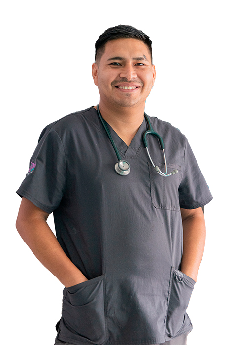

Nuestro Equipo

M.V Angel Gonzalo Aguirre Sosa
CMVP:11373

M.V Angel Gonzalo Aguirre Sosa
CMVP:11373

M.V Angel Gonzalo Aguirre Sosa
CMVP:11373
QUIENES SOMOS
VetClinic inicia sus labores el 01 de octubre de 2020. Su fundador Dr. Esteban Guzman Espinoza quien decidio ofrecer una propuesta medica integral y de calidad.
Desde su fundación, fue conocida por el desarrollo de nuevas técnicas y herramientas quirúrgicas y de rehabilitación, que permitieron ser una Clínica Veterinaria referente en el País y diferenciarse con propuestas innovadoras, como fue la silla de ruedas para mascotas, que permite realizar una adecuada rehabilitación en casos con buen pronóstico, así como ser instrumento de movilización del paciente aportando calidad de vida en otros casos.